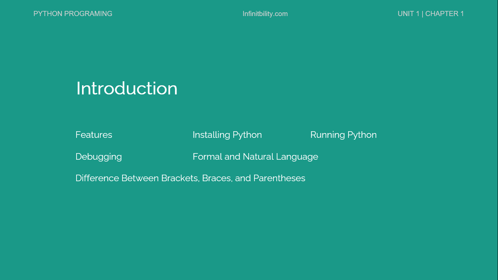

Python is a high level Programming language. Python was developed by Guido van Rossum. The python language first version was released in 1991. python language is named as paython after the BBC show "Monty Python's Flying Circus"
Introduction Topics

Features of Python Programming
High level Programming language
Python is a free and open source language
Python is simple
Error checking and high level data type
Platform independent language
User friendly
Python is object oriented
High level Programming language
High level language means, this is separate from the low level processor operations.
High level language is closer to human language than machine language in other words high level language is English like language and on the other hand low level language is a machine code in which instruction and data are directly executed by the CPU.
Python is a free and open source language
Python is free, there is no need to pay money for installing python.
Python is an open source language means, any one can use python source code for making any changes on feature in python.
Python is simple
There is no need of declaring variables in python.
In a single statement the user can express the complex operation.
It uses indentation for statement grouping. Such as “print(‘hello’)”
Error checking and high level data types
Python offers more effective error checking then c.
Python is having built in high level data types for example arrays and dictionaries.
Python have more general data types compare to Awk and perl.
Platform independent language
Python is platform independent, it means write your python program any operating system and run it on any machine which has python
For example, if we have python code for windows and if we want to run this code on other platforms such as Linux, Unix, and Mac then we do not need to change it, we can run this code on any platform.
User friendly
In Python you can divide your program into modules that can be used in other python programs.
Python is having a large collection of modules as their program. User can use these modules as the basis of their program
Python language is having the feature of abstraction which make it more user friendly.
Python is object oriented
Python supports object-oriented language and concepts of classes and objects come into existence. It supports inheritance, polymorphism, and encapsulation, etc. The object-oriented procedure helps to programmer to write reusable code and develop applications in less code
- Create new file with python extension. Like example.py
- Write program on python file
- Click F5 else click on run -> Run Modules on menu
Debugging
In Programming various errors occurred they are called as bugs. The process of tracking these bug is called debugging.
Types of Errors
Syntax
Runtime
Semantic
Experimental debugging
Syntax Errors
- The syntax means the structure of the program. It the syntax is not correct it result in syntax error.
- For example. Print(2+2 forgot to close parentheses then you got syntax error
Runtime Errors
- Runtime errors are known as runtime errors because the error does not appear after the program has started running runtime errors are also known as exception which indicates something bad happened.
- Runtime error occurs very rarely.
Semantic Errors
- In case of semantic error your program will execute properly without showing any error message but it will not given the correct result. You can also say that there is a logical error.
Experimental Debugging
- Debugging is a challenging work. Here you will get the clues and you have to infer the processes and events that led to the results you see. Debugging is also known as an experimental science.
Formal and Natural languages
- The language which people speak is known as natural language. Such as Hindi, Marathi, English, and etc.
- Formal languages are designed by people for particular application. Formal languages have strict rules about syntax.
- Natural languages have ambiguity. In this people uses related evidences and other information.
- Formal languages are unambiguous. In formal languages any statement has exactly one meaning , apart from background.
Difference between brackets, braces, and parentheses.